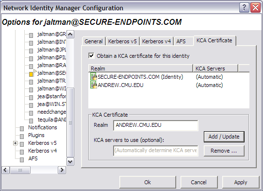
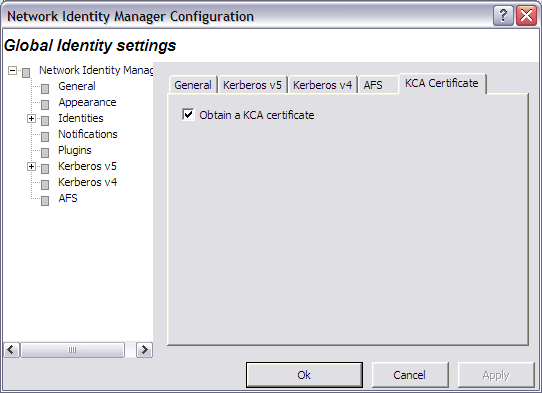

The settings specified when obtaining a KCA certificate for an identity are saved and will be reused the next time new credentials are obtained for the same identity. In addition to that, you can specify default settings that will be used with any new identity (i.e. an identity for which you haven't specified KCA settings for). These settings can be viewed and changed via the Network Identity Manager configuration panels (accessible via the Options -> Identities... menu item).
The KCA Certificate settings for an identity are identical to the settings available via the advanced view of the Obtain New Credentials dialog (as shown in the Obtaining new credentials topic).

Figure 1: Identity Configuration showing the KCA Certificates options panel
The Kerberized Certificate Authority provider can obtain kerberized certificates from multiple Kerberos realms for a single network identity.
The Obtain KCA certificates for this identity checkbox is used to determine if KCA Certificates will be obtained for the current identity.
A table view of the configured Kerberos Realms is provided. For each realm, either a list of KCA servers is provided or the word "(Automatic)". "(Automatic)" is used to indicate that the KCA provider will obtain the list of KCA servers for the realm by querying the Domain Name System.
To add a new KCA Certificate to the for this identity. Enter the Kerberos Realm name in the Realm text field and (optionally) provide a list of KCA servers to be used for the specified Kerberos realm. If no server list is specified, the KCA provider will determine the KCA server list automatically by querying the Domain Name System. (DNS SRV record locators are used.) When specifying a KCA server list, enter each server name separated by spaces. For example, if the list of KCA servers is kca1.example.com, kca2.example.com and kca3.example.com, then you would enter:
host1.example.com host2.example.com host3.example.com
in the KCA servers to use text field.
To complete the process of adding the KCA Certificate, press the Add/Update button.
Select the Kerberos realm in the table, edit the KCA server list, and press the Add/Update button.
Select the Kerberos realm in the table and press the Remove button.
A global default for Kerberized Certificate Authority certificate acquisition can be specified. When enabled, new Network Identities will automatically be configured to obtain a Kerberized Certificate from the identity's Kerberos realm.

Figure 2: Global Identity Configuration showing the KCA Certificates options panel